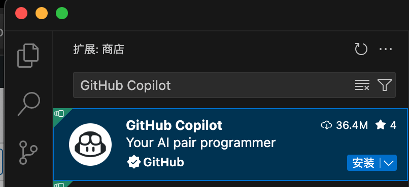
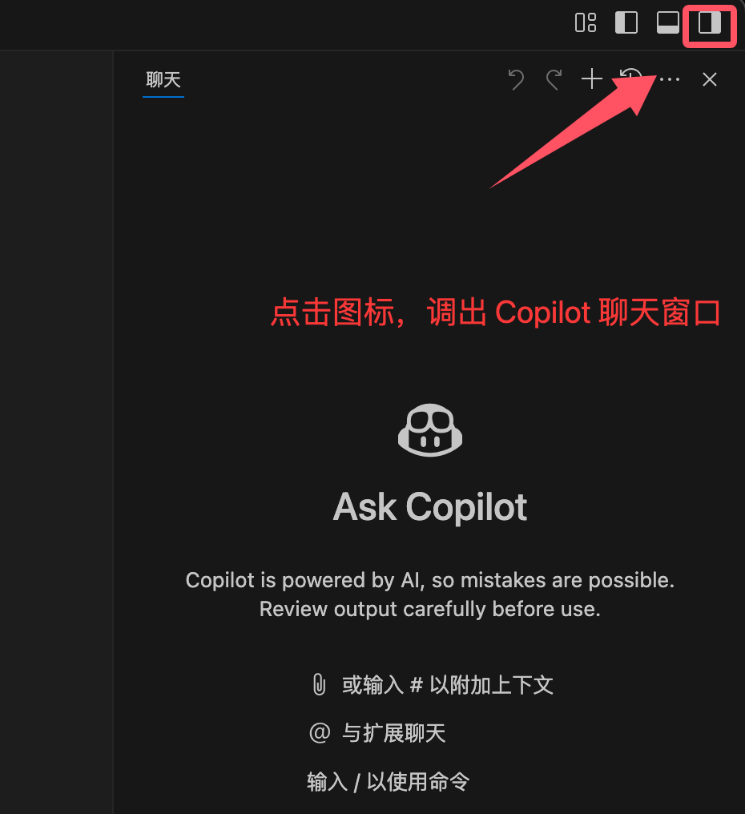
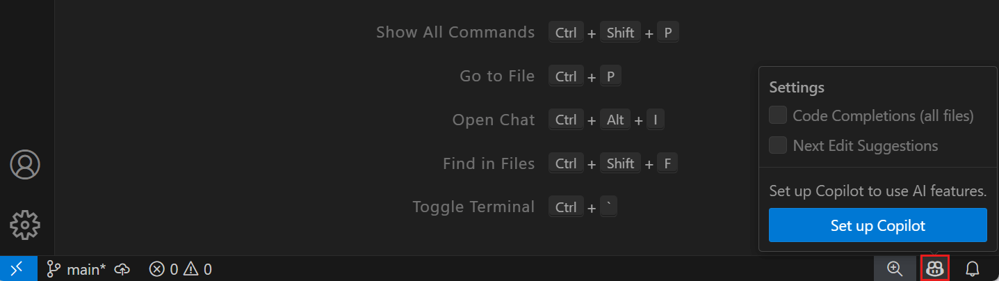
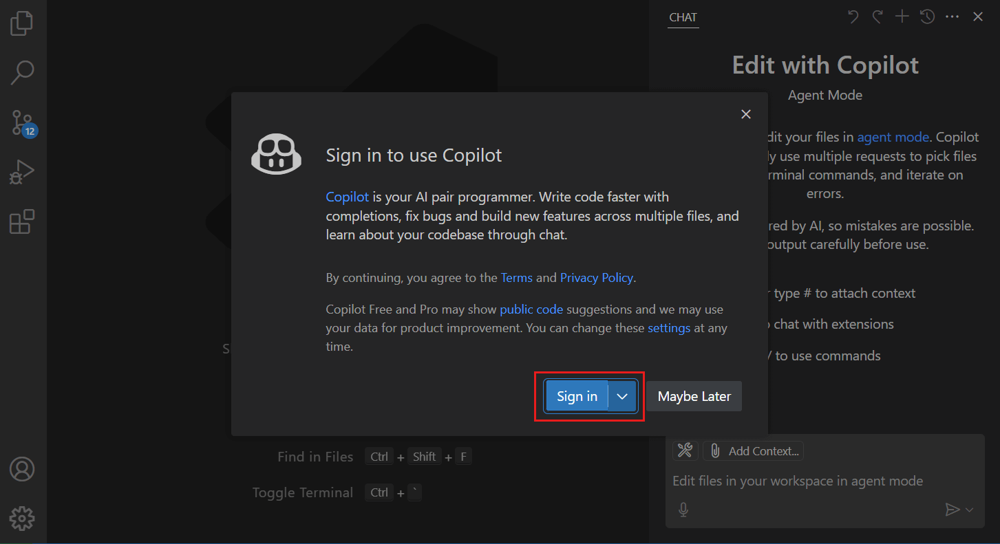
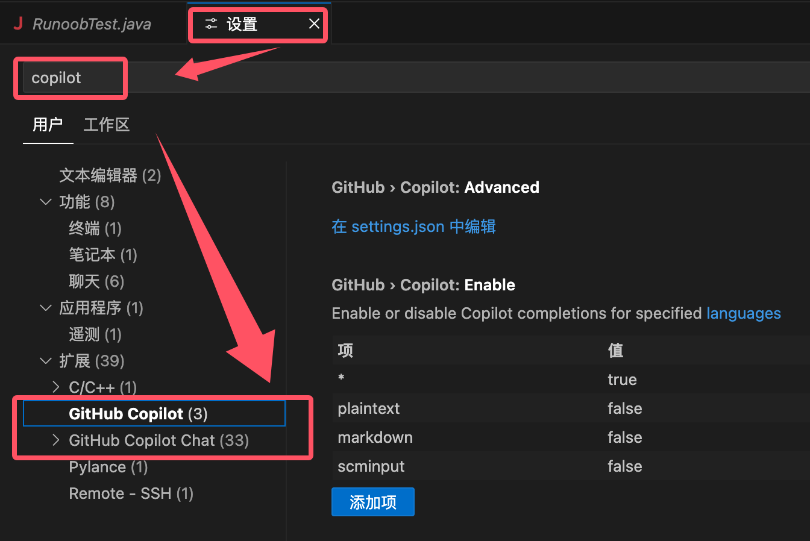
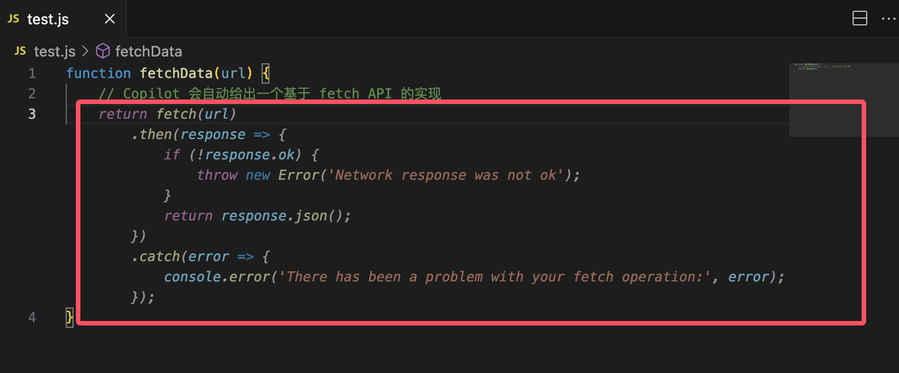
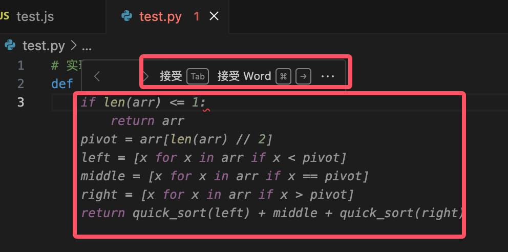
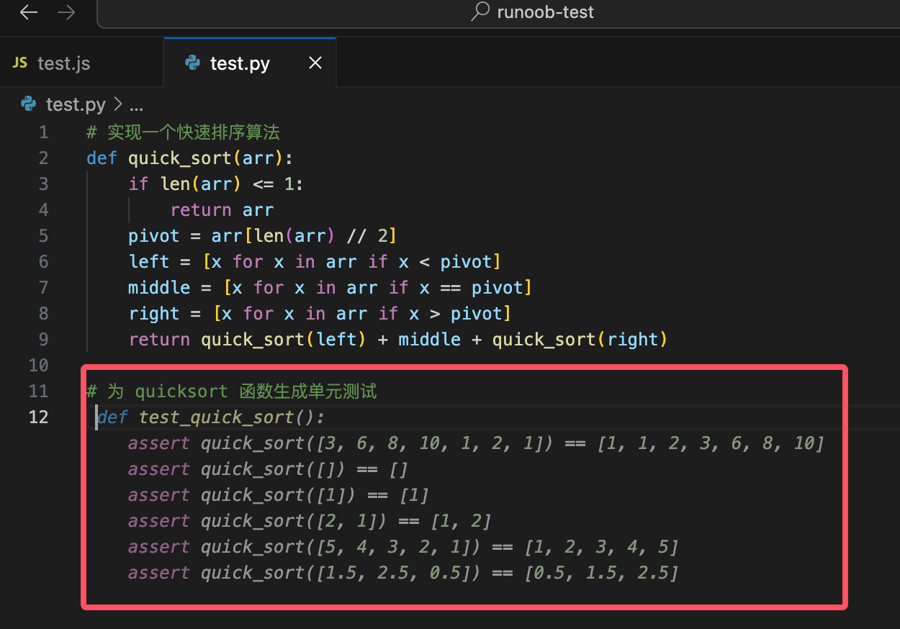
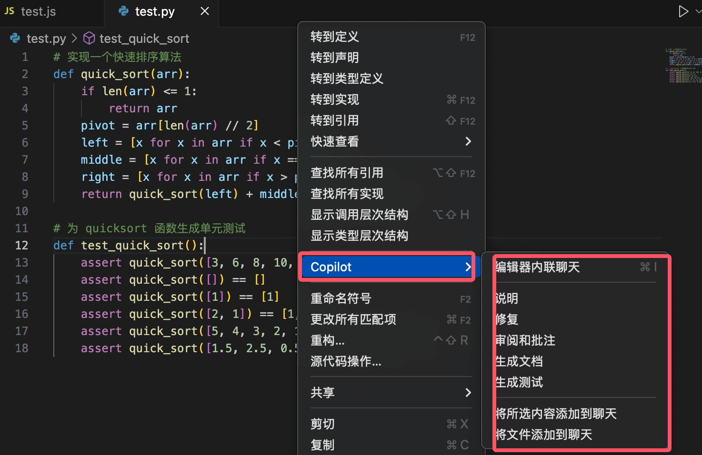
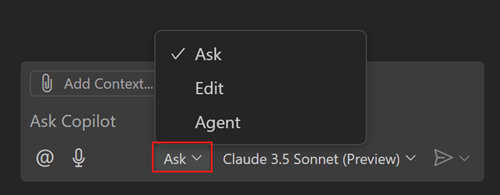

VS Code GitHub Copilot
GitHub Copilot は GitHub と OpenAI が共同開発した AI コーディングアシスタントで、コンテキストに基づいてコードを自動補完し、関数を生成し、ロジックを最適化し、さらにはコードモジュール全体を作成することもでき、開発者がより効率的にコーディングできるよう支援します。
GitHub Copilot は VS Code、Visual Studio、JetBrains などのさまざまな IDE に統合されており、コードを書いているときに、経験豊富なパートナーがいつでもそばでサポートしてくれているかのような感覚を与えてくれます。
コア機能
コード自動補完
GitHub Copilot は、コードのコンテキストとコメントに基づいて、リアルタイムでコード提案を提供できます。次のことが可能です：
- コード行全体を補完する
- 完全な関数を生成する
- 説明的なコメントに基づいてコードを生成する
コード解説
Copilot は、見慣れないコードを理解するのに役立ちます：
- 複雑なコードセクションの機能を説明する
- コード最適化の提案を提供する
- 潜在的な問題を特定する
多言語サポート
ほぼすべての主要プログラミング言語をサポートしています：
- JavaScript/TypeScript
- Python
- Java
- C++
- Go
- Ruby など
インストールと設定
インストール手順
前提条件
-
VS Code が正しくインストールされていること。推奨バージョンは
1.116+以上です。このバージョンには Copilot がネイティブに組み込まれており、プラグインを手動でインストールする必要はありません。 -
GitHub アカウントが必要です。また、GitHub Copilot サブスクリプション（個人版、チーム版、エンタープライズ版のいずれでも可）を有効にする必要があります。
拡張機能のインストール（旧版 VS Code 1.115 およびそれ以前のバージョン）
-
VS Code を開き、拡張機能マーケットプレイス（Extensions Marketplace）に移動します。
-
検索
GitHub Copilot。 -
クリック
安装(Install)インストール。
インストールが完了したら、右上隅の小さなアイコンをクリックすると、Copilot のチャットウィンドウを呼び出すことができます：

右下隅のアイコンをクリックすることもできます：

GitHub アカウントにログイン
-
インストールが完了すると、VS Code が GitHub アカウントへのログインを促します。
-
クリック
Sign in to GitHubすると、ブラウザが GitHub の認可ページにリダイレクトされ、認可後に自動的に VS Code に戻ります。
GitHub Copilot を有効にする
-
VS Code で [キー] を押し、
Ctrl + Shift + P[コマンド] を入力し、Copilot: Enable。 -
有効にすることを確認したら、使用を開始できます。
インストール後、VS Code の設定を開き、Copilot を検索します。ここでは VS Code の設定で次の項目を調整できます：
- 提案のトリガー方法（自動または手動）
- 提案の表示位置
- 言語の環境設定

使用テクニック
スマート補完
コードを入力し始めると、GitHub Copilot が自動的に提案を表示します。例：
function fetchData(url) {
// Copilot 会自动给出一个基于 fetch API 的实现
}

Tab キーを押して提案を受け入れることができます。
複数の提案がある場合は、Ctrl + ] 或 Ctrl + [で切り替えられます。
-
提案を使用したくない場合は、Escでキャンセルします。
コメントからコードを生成
コメントを書くだけで、Copilot が実装してくれます：
# 实现一个快速排序算法

実例
def quick_sort(arr):
if len(arr) <= 1:
return arr
pivot = arr[len(arr) // 2]
left = [x for x in arr if x < pivot]
middle = [x for x in arr if x == pivot]
right = [x for x in arr if x > pivot]
return quick_sort(left) + middle + quick_sort(right)
テストケースの生成
コメントを書くだけで Copilot にテストを生成させることもできます：
// 为 quicksort 函数生成单元测试

さらに、エディターで右クリックして Copilot を選択し、必要な機能を呼び出すこともできます：

ショートカットキーの説明：
| ショートカットキー | 機能の説明 |
|---|---|
Tab |
提案を受け入れる |
Esc |
提案を無視する |
Ctrl + ] |
次の提案を表示する |
Ctrl + [ |
前の提案を表示する |
Ctrl + Enter |
Copilot パネルを開く |
Ctrl + Shift + P |
Copilot を有効/無効にする |
VS Code でチャット機能を使用する
Visual Studio Code でチャット機能を使用すると、自然言語でコードベースに関する質問をしたり、プロジェクト内で複数ファイルの編集を行ったりすることができます。チャット機能は、質問、複数ファイルの編集、エージェント型コーディングワークフローの起動に至るまで、ニーズに応じてさまざまなモードで動作し、あらゆる要件を満たすことができます。
以下のシナリオで VS Code のチャット機能を使用できます：
- コードの理解：例：「この認証ミドルウェアがどのように機能するか説明してください」
- デバッグの問題：例：「このループでなぜ null 参照になるのですか？」
- コード提案の取得：例：「Python で二分探索木を実装する方法を示してください」
- パフォーマンスの最適化：例：「このデータベースクエリの効率を上げるのを手伝ってください」
- ベストプラクティスの学習：例：「非同期関数のエラーを処理する推奨方法は何ですか？」
- VS Code のヒントを得る：例：「キーボードショートカットをカスタマイズするにはどうすればよいですか？」
ヒント：Copilot のサブスクリプションをまだお持ちでない場合は、Copilot 無料プランに登録することで、毎月制限付きの補完とチャット操作を無料で利用できます。
チャットモード
具体的なニーズに応じて、さまざまなチャットモードを選択できます：
| モード | 説明 | シナリオ |
|---|---|---|
| 質問 (Ask) | コードベースや技術的概念に関する質問をします。 | 安定版またはプレビュー版で利用できます。コードスニペットの動作原理を理解したり、ソフトウェア設計のアイデアをブレインストーミングしたり、新しい技術を探求したりします。 |
| 編集 (Edit) | コードベース内で複数ファイルの編集を行います。 | 安定版またはプレビュー版で利用できます。プロジェクトにコード編集を直接適用し、新機能の実装、バグ修正、コードのリファクタリングに使用します。 |
| エージェント (Agent) | エージェント型のコーディングワークフローを起動します。 | 安定版またはプレビュー版で利用できます。最小限の指示のもと、新機能やプロジェクトの高度な要件を自律的に実装し、ツールを呼び出して専門的なタスクを実行し、問題が発生した場合は反復的に解決します。 |
チャットビューでモードドロップダウンメニューを使用すると、異なるチャットモードを切り替えることができます。

その他の拡張機能
クリックしてノートを共有
<p style="font-size:14px;">ノートは本記事の内容をさらに発展させたものである必要があります！</p><br> <p style="font-size:12px;"><a href="../tougao.html" target="_blank">記事の投稿は、こちらをクリックしてください</a></p> <p style="font-size:14px;"><a href="../w3cnote/runoob-user-test-intro.html" target="_blank">登録招待コードの取得方法</a></p> <h3 class="text-muted"><i class="fa fa-info-circle" aria-hidden="true"></i> ノートを共有する前に<a href=";.html" class="runoob-pop">ログイン</a>が必要です！</h3> <p><a href="../w3cnote/runoob-user-test-intro.html" target="_blank">登録招待コードの取得方法</a></p>